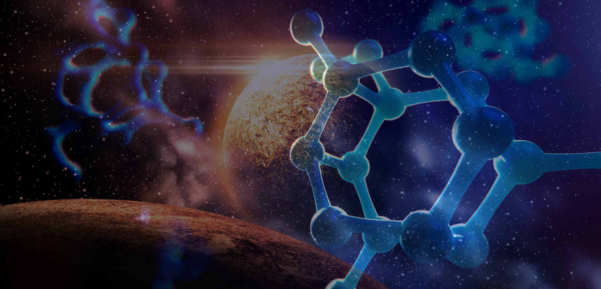
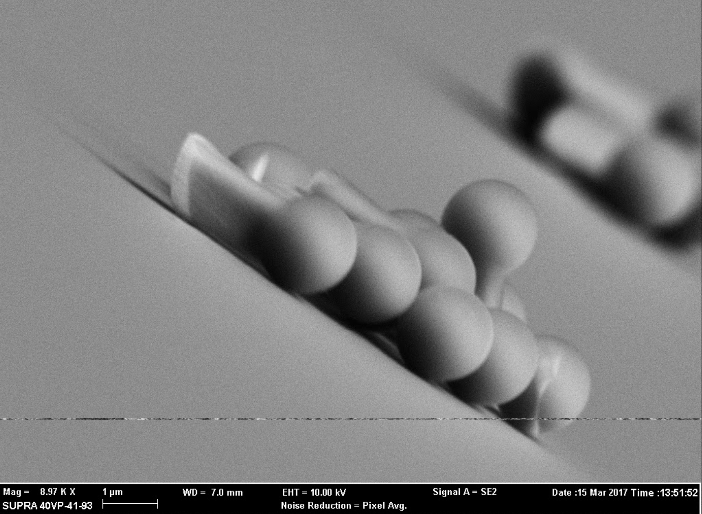
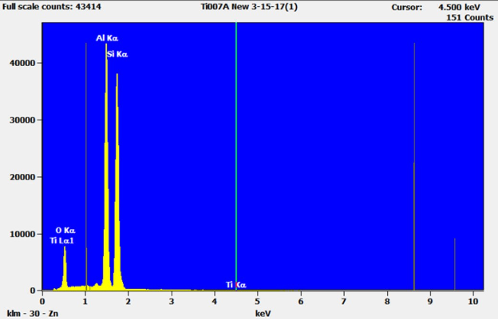

research and published papers
-Cpt. Picard, Star Trek
N A N O S C I E N C E
Two areas were the focus of my research, which included the self-assembly of active magnetic micro- and nano- structures, and shape-dependent motion of structured photoactive microswimmers.
The first study had to do with learning how to control the direction of the microparticles through the use of magnetic fields, generated by copper coils. And then have them self-assembly.
In the next experiment, we focused on the geometry of the microparticles and used UV light as a reactive agent. It was more promising and potentially a safer delivery system than previous attempts. The end result was published through the Applied Materials & Interfaces Journal. Which can be viewed by clicking this
A S T R O N O M Y
Our team studied the data collected from the Kepler satellite to determine characteristics of certain stars. Our findings were presented at the American Astronomical Society in 2012 as Stellar Variability Survey of Kepler Mission Data.
The purpose was to study Kepler Mission data releases in survey form to determine the variability and nature of stars within the mission field. During a time frame allotted for this project, we individually studied the light curves, frequency domain and phase plots of 200 stars to better categorize the nature of their potential variability. Our research focused on a random sample of 200 Main Sequence dwarf stars (class V luminosity). Determining the periodicity of such stars will provide a basis for later comparison against light curves identified as potential planetary transits.